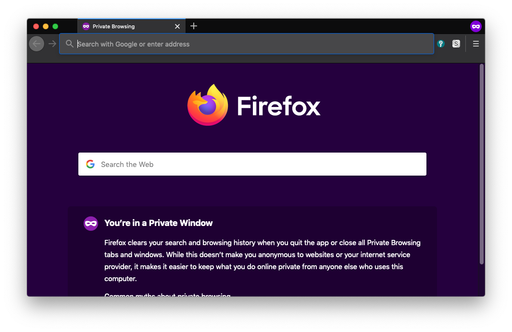
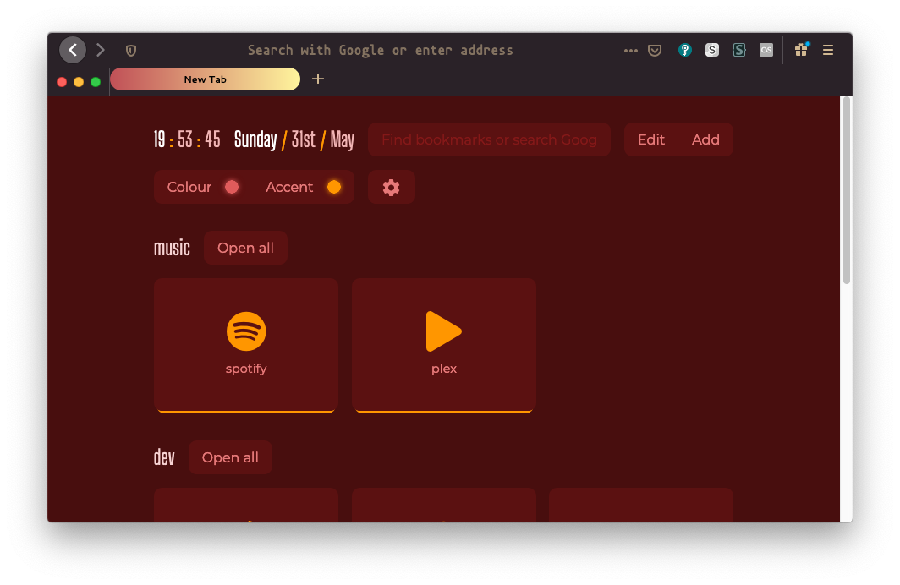

homepage - tags - github - site code
Feb 12 2020
Firefox has recently been making some changes to what extensions are allowed to do. As an end-user, the biggest changes I've seen are that extensions can't write to the file system anymore and it is tougher for plugins to change to look of Firefox.
Of course, if the internet's taught us anything, with enough time you can make anything look like anything.
To cut straight to the chase, my current ~/.config/mozilla configuration is here, and the recent commits that touch that directory (retrieved with git hist -- ~/.config/mozilla):
If you prefer looking through configs yourself, have at it; for some more context, read on.
Using minimal-functional-fox, a patch to Firefox's userChrome, you can change how exactly the browser draws its titlebars, tabs, and assorted window borders. Controlling this lets you control how the "window" part of Firefox looks. Since I typically go for a minimal style, it makes sense to try to get all the cruft of a Firefox header out of the way.
The default Firefox currently looks like this:

who needs default when you can waste time customizing
The header is about 90px tall and has a very utilitarian, austere sort of look (in my opinion). I prefer having tabs a bit more rounded, and I'd really like if the header could be shortened a bit so I have more space for the page content. I can also do away with display the bookmark bar entirely since I never jump from a currently-open page to a bookmark.
So let's try this:
customizable gradients? count me in
Now the window header is shortened to 74px (WOW, 16px more! AMAZING!). It's not a huge improvement, but since I tile my windows and have browser windows taking up a quarter of the screen quite commonly, it really feels like I get more out of the page being displayed.
The userChrome has also added some nice color to our tabs, and it's made the URL of the current tab more prominent that our list of tabs, which I like.
There are tons of custom homepages out there for firefox and deciding to find one you like can seem like a never-ending challenge. I feel like I've settled (for now) on a pretty good one: nightTab. It's a beautiful, material-design-esque start page that lets you easily group bookmarks and import/export your settings. The homepage does a better job of showing it off, so I'll just include a snap of it on my machine:

for a gui, this isn't so bad
If you haven't heard of Stylus, it's a classic browser plugin that lets you change the CSS style of arbitrary webpages. It's a nice complement to Greasemonkey, a plugin that lets you customize websites with injected Javascript.
Finding styles for different sites can feel like a bit of a scavenger hunt at times, but you can use https://userstyles.org/ for a decent jumping point.
I use a few styles for different webpages, and a really nice one I've found recently is github-moonlight, which makes browsing GitHub much more pleasant.
~ tags : #ricing